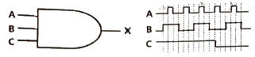
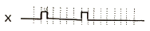
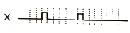
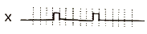
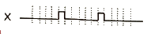
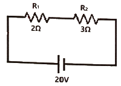
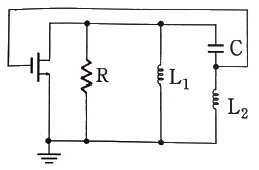
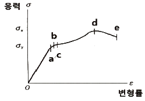

의공기사 (2020-06-06 기출문제)
1과목: 기초의학 및 의공학
1. 심장과 관련된 설명 중 틀린 것은?
- 좌심방, 좌심실, 우심방, 우심실의 벽 중에서 좌심실의 벽이 가장 두껍다.
- 심근의 활동전위는 골격근의 활동전위보다 기간이 길다.
- 심장근 활동전위 곡선에서 고평부(Plateau)가 생기는 것은 Fe의 작용 때문이다.
- 심장의 흥분과정이나 그 전도과정에 이상이 발생하여 심장 리듬에 이상이 생긴 경우를 부정맥이라 한다.
(정답률: 77%)

2. 광센서에서 휴대를 요하는 경우 광원으로 LED가 유용하게 쓰이는 이유로 틀린 것은?
- 저비용이다.
- 크기가 작다.
- 온도가 증가한다.
- 수명이 길다.
(정답률: 85%)
3. 센서회로에 많이 이용되는 회로로 미지의 저항값을 측정할 때 사용되는 회로는?
- 발진 회로
- 베이스 공통 회로
- 휘스톤 브리지 회로
- 이미터 바이어스 회로
(정답률: 82%)
4. 생체신호 측정용 전극에서 유리모세관을 이용하여 제작되며, 일반적으로 3 mol 의 KCI을 봉입하고 와이어 전극을 삽입하여 만들어지고 전극으로는 은-염화은이 많이 이용되지만, 스테인리스강으로도 제작되는 전극은?
- 마이크로 피펫 전극(Micropipet electrode)
- 실리콘 미세전극(Silicone microelectrode)
- 금속 미세전극(Metal microelectrode)
- 침 전극(Needle electrode)
(정답률: 82%)
5. 가변저항(potentiometer) 센서에 대한 설명으로 틀린 것은?
- 직선 변위만 측정할 수 있다.
- 선형성이 좋고 측정 범위가 넓다.
- 교류와 직류 모두 사용할 수 있다.
- 저항 측정을 통해 변위를 측정한다.
(정답률: 80%)
6. 성인 심장 박동수가 분당 60회 미만으로 비정상적으로 천천히 뛰는 것은?
- 빈맥
- 서맥
- PVC(심실조기수축)
- PAC(심방조기수축)
(정답률: 84%)
7. 체내에 삽입하여 측정하는 전극은?
- 건식 전극(Dry electrode)
- 와이어 전극(Wire electrode)
- 가요성 전극(Flexible electrode)
- 금속 플레이어 전극(Metal-plate electrode)
(정답률: 75%)
8. 신경과 근육의 연접부위에 대한 설명 중 틀린 것은?
- 효소인 아세틸콜린 에스테라제는 아세틸콜린 복합체를 활성화 시켜준다.
- 유출된 아세틸콜린은 근육의 수용기(receptor)에 도달되어 수용기-아세틸콜린 복합체를 만든다.
- 운동신경 말단에는 다수의 소포(vesicle)가 있고 이곳에 미토콘드리아 및 화학전달물질인 아세틸콜린 등이 함유되어 있다.
- 흥분이 신경종말까지 전도되면 소포 속에 저장되어 있던 아세틸콜린이 분비되어 신경종말과 종판 사이의 좁은 간격으로 화산 유출된다.
(정답률: 58%)
9. 변위에 따라 저항이 바뀌는 센서는?
- 열전쌍
- 압전센서
- 유도성 센서
- 스트레인게이지
(정답률: 70%)
10. 세포막의 선택적 투과에 의해 물질이 한 방향으로만 이동하는 현상은?
- 확산
- 삼투현상
- 용매끌기
- 능동적이동
(정답률: 77%)
11. 두 개의 코일을 같은 축 방향으로 배열하여 한 개의 코일에 교류전류를 흘려주고 코어의 위치변화를 시키면서 다른 코일에서 변위전압을 측정하는 센서방식은?
- 자기유도
- 상호유도
- 차동유도
- 전압유도
(정답률: 60%)
12. 일회용 금속판 전극에 대한 설명으로 틀린 것은?
- 인체 내부의 장기에 사용할 수 있다.
- 전해질 겔을 추가로 바를 필요가 없다.
- 피부에 부착하기 위한 접착부분이 있다.
- 금속은 일반적으로 Ag-AgCl로 코팅되어 있다.
(정답률: 73%)
13. 세포외에 K+이 많아지는 과칼륨혈증(HyperKalemia) 상태가 되면 탈분극이 지연되는 현상이 생길 때 심전도의 형태는?
- P파는 높아진다.
- QRS파는 넓어진다.
- T파는 낮아진다.
- U파는 소멸된다.
(정답률: 81%)
14. 의료 및 생체실험용으로 많이 쓰이는 대표적인 비분극형 전극에 해당하는 것은?
- 은 전극
- 금 전극
- 은-염화은 전극
- 스테인리스 바늘 전극
(정답률: 82%)
15. 인체 피부에 탈부착이 쉽고 빠른 반면 장시간 사용에 부적합하고 굴곡이 심한 부위에는 부착할 수 없는 전극은?
- 부유 전극
- 흡착 전극
- 미세 전극
- 금속판 전극
(정답률: 78%)
16. 변위를 계측하는 센서로 선형적인 출력특성을 가지며, 위상의 변화로 변위의 방향을 측정할 수 있는 센서는?
- 인코더(Encoder)
- 서미스터(Thermistor)
- 선형가변차동변환기(LVDT)
- 압전센서(Piezoelectric sensor)
(정답률: 78%)
17. 윤활관절 중 한 면에서의 굽힘과 폄에 해당하는 운동만 가능한 관절은?
- 평면관절(plane joints)
- 중쇠관절(pivot joints)
- 경첩관절(hinge joints)
- 안장관절(saddle joints)
(정답률: 84%)
18. 인체의 혈액은 체중의 얼마정도인가?
- 8%
- 23%
- 45%
- 55%
(정답률: 73%)
19. 생체 신호를 측정하는데 있어 발생하는 동잡음에 대한 설명으로 옳은 것은?
- 전원 잡음이 주로 원인이다.
- 차동증폭기로 줄일 수 있다.
- 분극 전극에서는 비분극 전극에서보다 작게 발생한다.
- 전극표면에서 전하의 이중층에 교란이 일어나서 주로 생긴다.
(정답률: 63%)
20. 심장 전기 자극의 이동경로로 옳은 것은?
- 동방결절(SA node)→심방(strium)→방실결절(AV node)→심실(ventricle)→히스속(His bundle)→푸르키니에 섬유(Purkihje Fiber)
- 동방결절(SA node)→심방(strium)→방실결절(AV node)→히스속(His bundle)→푸르키니에 섬유(Purkihje Fiber)→심실(ventricle)
- 방실결절(AV node)→심방(strium)→동방결절(SA node)→히스속(His bundle)→푸르키니에 섬유(Purkihje Fiber)→심실(ventricle)
- 방실결절(AV node)→동방결절(SA node)→심방(strium)→히스속(His bundle)→푸르키니에 섬유(Purkihje Fiber)→심실(ventricle)
(정답률: 83%)
2과목: 의용전자공학
21. 100회 감은 코일과 쇄교하는 자속이 2초 동안에 0.5Wb에서 0.3Wb로 감소하였을 때, 코일에 유기되는 기전력(V)은?
- 5
- 10
- 15
- 20
(정답률: 74%)
22. R-L-C 직렬회로에서 50V의 사인과 교류 전압을 인가했을 때, 회로에 흐르는 전류의 크기(A)는? (단, R=4ohm, XL=8ohm, XC=5ohm 이다.)
- 5
- 10
- 15
- 20
(정답률: 70%)
23. 아래 그림과 같이 3-input AND 게이트에서 입력과 적합한 관계가 있는 출력파형은?





(정답률: 82%)
24. 변위전류와 관계가 가장 깊은 것은?
- 반도체
- 자성체
- 유전체
- 도체
(정답률: 71%)
25. 직경이 5×10-3m인 혈관의 혈류가 0.1m/s로 흐르고 있다. 이 혈류에 직각 방향으로 3×10-3T의 자기장이 걸려 있을 때, 전자유량계의 전극을 혈관에 부착했을 시 유기되는 전압(μV)은? (단, 전극의 부착방향과 혈류 방향 및 자속의 방향은 서로 직각이다.)
- 0.015
- 0.15
- 1.5
- 15
(정답률: 61%)
26. B급 전력증폭회로 출력단의 특성으로 틀린 것은?
- C급보다 효율이 나쁘다.
- A급보다 전력효율이 좋다.
- A급보다 신호 왜곡이 적다.
- 신호가 없을 때 전원전류가 흐르지 않는다.
(정답률: 54%)
27. 컴퓨터 시스템 주변장치에서 요청된 상황 발생 시 지체없이 적절한 조치를 취한 뒤 원래 수행하던 프로그램을 계속하도록 하는 기능은?
- 폴링(polling)
- 스풀링(spooling)
- 버퍼링(buffering)
- 인터럽트(interrupt)
(정답률: 71%)
28. 생체신호 측정에 사용되는 건성 전극에 대한 설명으로 틀린 것은?
- 전해질 겔을 사용하지 않아도 된다.
- 건성피부에서는 용량성의 잡음이 발생한다.
- 일반 전극에 비해 매우 큰 접촉 임피던스를 갖는다.
- 낮은 입력 임피던스의 초단 증폭기가 필요하다.
(정답률: 53%)
29. 커패시터 필터에 관한 설명으로 옳은 것은?
- 리플계수 r=VDC/Vr 이다.
- 리플이 클수록 효율적인 필터이다.
- 커패시터의 용량을 작게 하면 출력전압은 직류에 가까워진다.
- 커패시터의 충전과 방전에 의한 출력전압의 변동이 리플 전압이다.
(정답률: 65%)
30. 심전계를 이용하여 정확한 심전도를 얻기 위한 주의사항 중 틀린 것은?
- 접지를 확실히 한다.
- 전극과 피부 면의 접촉저항을 아주 크게 한다.
- 세동 제거를 하는 경우는 심전도 전극을 분리한다.
- 펜의 진동이 기록지 폭의 중앙이 되도록 기선을 조정한다.
(정답률: 78%)
31. 그림과 같이 두 개의 저항이 직렬로 접속되어 있을 때 저항 R1에 걸리는 전압(V)은?

- 4
- 8
- 12
- 16
(정답률: 78%)
32. 생체신호변환 시스템을 구성할 때 필요조건이 아닌 것은?
- 보안
- 정확도
- 처리속도
- 전력소모
(정답률: 69%)
33. 다음 회로와 같이 구성되고 정궤환 요소가 2개의 인덕턴스와 1개의 커패시터로 이루어진 발진기의 종류는?

- Colpitts 형
- Hartley 형
- Wien bridge 형
- Phase shift 형
(정답률: 67%)
34. 맥파(pulse wave)의 종류로 틀린 것은?
- 혈류맥파
- 직경맥파
- 압맥파
- 횡맥파
(정답률: 63%)
35. 전기력선의 특성에 대한 설명으로 틀린 것은?
- 전기력선은 전위가 낮은 쪽으로 향한다.
- 전기력선은 도체 표면과 평행하게 지나간다.
- 도체 내부에는 전기력선이 존재하지 않는다.
- 전기력선은 +전하에서 -전하로 끝난다.
(정답률: 56%)
36. 마이크로프로세서의 성능을 구별하는 척도가 아닌 것은?
- 명령어 처리 속도
- 마이크로프로세서의 가격
- 접근할 수 있는 메모리 크기
- 마이크로프로세서가 처리하는 워드의 길이
(정답률: 83%)
37. 연산증폭기에서 부궤환(Negative Feedback)을 사용하는 목적으로 틀린 것은?
- 전압이득을 조절하여 사용하기 위해
- 선형증폭기로 사용하기 위해
- 비교기로 사용하기 위해
- 대역폭을 제어하기 위해
(정답률: 57%)
38. 불 대수(Booleam algebra)의 기본정리 중 틀린 것은?
- A+1=A
- A·1=A
- A+A=A
- A·A=A
(정답률: 69%)
39. 기체 농도를 측정하는 방법으로 N2 함유기체가 이온화된 후 발생시키는 빛의 에너지를 측정하여 농도 계산을 하는 방법은?
- Mass spectroscopy
- Emission spectroscopy
- Infrared spectroscopy
- Thermal conductivity detector
(정답률: 70%)
40. 단색광, 평행광, 동위상으며, 고에너지 집속이 가능한 광원은?
- 광방출 다이오드
- 텅스텐 램프
- 아크방전
- 레이저
(정답률: 72%)
3과목: 의료안전·법규 및 정보
41. 레이저의 등급에 대한 설명으로 옳은 것은?
- 1M등급- 인체에 레이저광을 조사하여도 위험하지 않다.
- 2등급- 눈에 레이저광이 조사될 때 0.25초의 눈깜빡임으로 보호될 수 있다.
- 3R등급- 인체에 레이저광이 직접 조사되면 위험하다.
- 3B등급- 눈에 레이저광이 직접 조사되면 위험하다.
(정답률: 60%)
42. 전기충격 방지용 추가보호수단에 따른 의료기기 분류 중 2급기기에 해당하는 추가보호수단 내용으로 옳은 것은?
- 보호접지 설비가 필요
- 접지형 3핀 콘센트 사용
- 기초 절연에 다시 절연을 중복시키는 방법
- 기기에 전지와 같은 전원을 내장하여 외부와 관계없이 하는 방법
(정답률: 55%)
43. 혈액 검사용 기기 품목에서 의료기기 등급이 다른 하나는?
- 정자·정액분석장치
- 혈중칼륨분석장치
- 개인용체외혈당측정시스템
- 자동헤모글로빈측정기
(정답률: 68%)
44. 의료기기의 성능 및 안전성 등 품질에 관한 자료로서 해당 품목의 원자재, 구조, 사용목적, 사용방법, 적용원리, 사용시 주의사항, 시험규격 등이 포함된 문서는?
- 기술문서
- 제조판매증명서
- 품목허가 별첨자료
- 의료기기 시험검사 성적서
(정답률: 75%)
45. 누설전류에 의해 감전된 자가 타인의 도움없이 전원으로부터 떨어질 수 있는 최대한계전류를 무엇이라 하는가?
- 자발탈출전류
- 마이크로쇼크
- 감지임계전류
- 최소감지전류
(정답률: 77%)
46. 의료기기법에서 5년 이하의 징역 또는 5천만원 이하의 벌금에 해당하는 경우는?
- 의료기기의 첨부문서에 사용방법과 사용 시 주의사항을 기입하지 않은 경우
- 허가 또는 인증을 받지 아니하거나 신고를 하지 아니한 의료기기를 수리·판매·임대·수여를 한 경우
- 사용 시 국민건강에 증대한 피해를 주거나 치명적 영향을 줄 가능성이 있는 것으로 인정되는 의료기기에 대해 사용중지의 명령을 위반한 자의 경우
- 고의 또는 중대한 과실로 거짓의 기술문서심사결과통지서, 임상시험결과보고서, 비임상시험성적서를 작성 또는 발급에 해당하는 위반행위를 한자의 경우
(정답률: 69%)
47. 다음 의료기기의 종류에서 충격시험이 필요없는 것은?
- 수지형 기기
- 이동형 기기
- 고정형 기기
- 신체착용형 기기
(정답률: 54%)
48. 폐기물관리법 시행규칙에서 정하는 의료폐기물을 위탁처리하는 배출자의 보관기간에 대한 설명으로 틀린 것은?
- 격리의료폐기물: 7일
- 조직물류폐기물 중 치아: 60일
- 위해의료폐기물 중 혈액오염폐기물: 15일
- 위해의료폐기물 중 손산성 폐기물: 20일
(정답률: 55%)
49. 방사선 관계 종사자는 건강진단을 실시하여야 한다. 건강진단 시 검사항목으로 틀린 것은?
- 혈당
- 적혈구 수
- 백혈구 수
- 말초혈액 중의 혈색소 양
(정답률: 71%)
50. 의료폐기물 처리 방법으로 옳은 것은?
- 멸균·분쇄한 후의 잔재물은 매립하여야 한다.
- 의료폐기물은 의료폐기물을 처리하기 위하여 설치한 소각시설이나 멸균·분쇄시설에서 처리하여야 한다.
- 의료폐기물은 소각시설이나 멸균·분쇄 시설에 넣기 전에 용기로부터 해체해서 넣어야 한다.
- 격리의료폐기물, 위해의료폐기물 중 조직물류폐기물 및 생물·화학폐기물은 멸균·분쇄하여야 한다.
(정답률: 70%)
51. 미생물에 물리적 또는 화학적 자극을 가하여 완전히 사멸 제거하는 것을 말하며, 의료기기에서 주로 산화에틸렌, 열, 감마선 등이 사용되는 방법은?
- 멸균
- 소독
- 방부
- 향균 작용
(정답률: 82%)
52. 환자접속부에서 환자를 경유하여 대지로 흐르는 전류는?
- 접지누설전류
- 외장누설전류
- 환자누설전류
- 환자측정전류
(정답률: 77%)
53. 의료기기의 수입을 업으로 하려는 자는 누구에게서 수입허가를 받아야 하는가?
- 의사협회
- 보건복지부장관
- 관할자치구장
- 식품의약품안전처장
(정답률: 76%)
54. 흉부수술실, 집중치료실, 응급실 등에서 각 장비 또는 시스템 간의 전위차를 해소하기 위해서 반드시 설치해야 하는 접지는?
- 보호접지
- 기능접지
- 계통접지
- 등전위접지
(정답률: 79%)
55. 병원정보시스템을 도입 한 후 기대할 수 있는 효과로 틀린 것은?
- 자원 관리의 효율성
- 병원 행정업무의 개선
- 환자의 진료 서비스 개선
- 환자와 의료인 간의 인간적 유대감
(정답률: 79%)
56. 원격의료에 대한 설명으로 틀린 것은?
- 원격통신을 이용한 진단 및 치료 행위
- 병원 내 PACS 연결로 인한 의료정보의 공유
- 화상회의와 원격의료영상전송시스템의 복합 기술
- 원격지의 의료종사자와 환자 사이에 정보통신기술을 활용한 의료행위
(정답률: 72%)
57. 의료가스 시스템에 제공되는 의료가스 기준으로 옳은 것은?
- 의료가스로 분류된 이외의 다른 종류의 가스를 제공해도 된다.
- 특정 고압으로 연결된 장치가 있어서 안정된 가스압이 유지되어야 한다.
- 병원에 의료가스를 제공하는 데 있어서 사정에 따라 때로는 일시적으로 중단해도 된다.
- 일반 가정용 가스를 의료가스 아우트렛(outlet)으로부터 제공한다.
(정답률: 79%)
58. 전자의무기록(EMR)의 개념으로 틀린 것은?
- 임상 경험과 의학 지식 축척의 보고
- 역학 및 임상의학 연구 수행의 핵심적 기반
- 환자의 임상진료와 관리에 관련된 모든 정보의 집합체
- 환자의 특성과 검사자료를 이용하여 진단과 치료방침을 제시
(정답률: 64%)
59. 국제질병분류(ICD)의 설명으로 옳은 것은?
- 전자의무기록을 위하여 만들어졌다.
- 환자기록을 추출해내기 위한 코드체계이다.
- 세계적인 의학 서적을 색인하는데 쓰인다.
- 치료비에 의거한 진단과 치료과정을 정의한다.
(정답률: 57%)
60. 의료기기를 분류할 때 인체에 미치는 중증도의 잠재적 위해성을 가진 의료기기는 몇 등급에 해당되는가?
- 1등급
- 2등급
- 3등급
- 4등급
(정답률: 76%)
4과목: 의료기기
61. 인공심폐기 중 막형 산화기의 재료로 틀린 것은?
- Silicon rubber membrane
- Polypropylene membrane
- Ceramic membrane
- Teflon membrane
(정답률: 65%)
62. 뇌파계 사용 시 주의사항으로 틀린 것은?
- 올바른 부위에 전극을 장착한다.
- 교류장해로부터 차폐가 필요하다.
- 피검자에게 정신적 스트레스를 주지 않는다.
- 기계적인 진동은 장치에 영향을 주지 않는다.
(정답률: 82%)
63. 교류전류를 인가하여 조직을 가열함으로써 조직절개(Cutting) 및 빠른 응고(Cogulation)가 이루어지도록 하는 장치로, 인체 조직의 손상을 최소화하고, 수술 시 출혈 감소를 위하여 사용되는 필수적인 장비는?
- 전기용접기
- 생물현미경
- 전기수술기
- 쇄석기
(정답률: 79%)
64. 혈관 내 혈류속도를 측정하기 위한 초음파 영상 촬영 방식은?
- A-mode
- B-mode
- M-mode
- 도플러 영상
(정답률: 69%)
65. 수액펌프의 알람기능 중 알람의 경보사항으로 틀린 것은?
- 공기 흡입시
- 과부하 발생시
- 설정된 값에 따라 약물이 다 주입된 상태
- 챔버에 약물방울이 규칙적으로 떨어지는 경우
(정답률: 79%)
66. 전자기파의 공간방사, 유전체손실, 작은 피충효과 그리고 충분한 측정기술의 확보 등의 특징을 이용한 치료기기는?
- 저주파치료기
- 고주파치료기
- 초음파치료기
- 레이저치료기
(정답률: 54%)
67. 체열진단을 위한 적외선 센서 구조에 맞는 신호처리 과정을 바르게 나열한 것은?
- 증폭기→흑체→초전체→광필터
- 흑체→초전체→증폭기→광필터
- 증폭기→흑체→광필터→초전체
- 광필터→흑체→초전체→증폭기
(정답률: 61%)
68. 증가하는 자장을 이용하여 하전입자를 일정한 원형궤도 위를 회전시키고 도중에 고주파를 인가하여 가속시키며 자장세기와 가속주파수를 변조시켜 입자궤도를 일정하게 유지시키는 장치는?
- Van de Graff generator
- Synchrotron
- D-T generator
- Cyclotron
(정답률: 55%)
69. 초음파가 신장(Z1=1.62)과 지방조직(Z2=1.38) 사이 경계면을 통과할 때, 경계면에서 발생되는 반사파 강도는 입사파에 비해 얼마가 되는가?
- 0.34%
- 0.48%
- 0.56%
- 0.64%
(정답률: 37%)
70. 정위적 방사선 수술기기인 감마나이프의 구성요소로 틀린 것은?
- ion pump
- radiation unit
- treatment couch
- collimator helmet
(정답률: 56%)
71. MRI(Magnetic Resonance Imaging)의 영상 변수로 틀린 것은?
- 전자밀도
- 수소밀도
- 스핀격자완화시간(T1)
- 스핀스핀완화시간(T2)
(정답률: 65%)
72. PET(Positron Emission Tomography)에서 사용되는 양전자 방출 핵종으로 틀린 것은?
- Carbon-11
- Fluorine-18
- Oxygen-15
- Technetium-99m
(정답률: 67%)
73. X-선이나 초음파로 뼈의 칼슘농도를 측정하여 뼈의 상태를 진단하는 기기는?
- 혈압계
- 환자감시장치
- 골밀도 측정기
- 캡슐형 내시경
(정답률: 82%)
74. 방사선 치료에 대한 설명으로 틀린 것은?
- 종양의 위치에 따라 방사선을 선택한다.
- 방서선을 받은 세포는 대부분 세포 분열시 기능 장애, 증식 정자가 일어난다.
- 방사선은 암 조직에만 장애를 일으키고 정상 조직에는 영향이 없다.
- 방사선 에너지가 인체를 구성하는 원자, 분자로 이행되어 화합물의 조성을 변화시킨다.
(정답률: 80%)
75. 제세동기의 제세동 성공에 관여하는 요인 중 하나가 경흉 저항이다. 경흉 저항에 관련된 인자로 틀린 것은?
- 전극 크기
- 호흡주기
- 전극선의 길이
- 전극-피부 접촉면
(정답률: 69%)
76. 간헐적 강제 환기의 장점으로 틀린 것은?
- 인공호흡기를 완전 끄기 전에 활용한다.
- 환기 효과를 위해서 마비나 진정제를 투여한다.
- 기계적 호흡수를 줄이면서 워닝(weaning) 과정을 가속화한다.
- 스스로의 호흡량을 점차 늘려가면서 호흡 전체를 감당한다.
(정답률: 69%)
77. 체열 진단기에서 사용하는 파장의 적합한 전자파 대역으로 옳은 것은?
- 근적외선영역
- 원적외선영역
- 중간적외선영역
- 마이크로파영역
(정답률: 55%)
78. 생체조직 내에서의 초음파 전파 속도가 큰 순서부터 바르게 나열한 것은?
- 뼈＞공기＞근육
- 공기＞근육＞뼈
- 뼈＞근육＞공기
- 근육＞공기＞뼈
(정답률: 72%)
79. CT Number가 가장 큰 것은?
- 공기
- 나일론
- 뼈(경골)
- 금속성 보철물
(정답률: 71%)
80. X-선이 물체를 통과할 때 X-선 광자의 에너지가 원자 내 전자로 완전히 전달되어 전자가 원자 밖으로 방출되면서 X-선 광자가 소멸되는 현상은?
- 특성 방사
- 제동 방사
- 광전 효과
- 콤프턴 산란
(정답률: 55%)
5과목: 의용기계공학
81. 생체 조직 이식 후에 생체 내에서 이무런 화학반응을 일으키지 않는 알루미나와 같은 재료는 어느 분류에 해당되는가?
- 생체 활성 재료
- 생체 합성 재료
- 생체 불활성 재료
- 생체 흡수성 재료
(정답률: 76%)
82. 인장 시험을 위한 응력-변형률 그래프에서 각 항목에 해당하는 명칭으로 옳은 것은?

- a: 극한점(ultimate point)
- c: 항복점(yield point)
- d: 비례한도(proportionality limit)
- e: 탄성한계(elastic limit)
(정답률: 60%)
83. 형상기억합금에 대한 설명으로 틀린 것은?
- 치열교정 와이어에 사용된다.
- 형상기억효과와 초탄성효과를 이용한다.
- 생체의료용으로는 니켈과 코발트 합금이 사용된다.
- 힘을 가해 변형을 하더라고 온도상승과 함께 본래의 기억된 형태로 복귀한다.
(정답률: 64%)
84. 다양한 세라믹들이 생체 재료로서 응용되고 있다. 세라믹 재료의 용도로 틀린 것은?
- 인공관절
- 인공혈관
- 골 수복재
- 인공 치근 및 치아
(정답률: 68%)
85. 저주파 영역에서 혈장, 전혈(헤마토크릿 40%) 및 적혈구의 전기 저항률이 높은 순서부터 나열된 것은?
- 적혈구＞전혈＞혈장
- 혈장＞적혈구＞전혈
- 전혈＞혈장＞적혈구
- 혈장＞전혈＞적혈구
(정답률: 63%)
86. 체간보조기에 대한 설명으로 틀린 것은?
- 3점 고정의 개념이 중요하다.
- 척주M 정렬유지 및 기형을 교정한다.
- 골반밴드, 흉추밴드, 후방지주, 외측지주 등으로 구성되어 있다.
- 종류로는 경추보조기, 흉 요천추보조기, 경흉 요천보조기 등이 있다.
(정답률: 67%)
87. 변형률(strain)에 대한 설명으로 틀린 것은?
- 변형률은 단위가 없는 무차원 값이다.
- 탄성물질에 대한 변형률은 전단응력에 반비례한다.
- 인장 변형률은 “양”으로 압축 변형률은 “음”으로 간주한다.
- 변형률은 매우 작은 양이기 때문에 측정시의 정밀도가 매우 중요하다.
(정답률: 65%)
88. 운동형상학(kinematics)에서 다루지 않는 것은?
- 관절각도
- 보행속도
- 지면반력
- 보장(step length)
(정답률: 67%)
89. 생체재료가 안전한 의료용 소재로 기능을 다하면서 인체에 사용될 수 있도록 품질이 보증되기 위해서 관리되는 문서에 포함되는 내용으로 틀린 것은?
- 생산 실적
- 용어의 정의
- 포장 표시 및 사용설명서
- 소재의 인용규격과 적용범위
(정답률: 75%)
90. 혈관의 혈압은 혈관벽이 응력을 받게 한다. 혈관벽이 받는 응력과 직접적인 관련이 없는 것은?
- 혈관의 반경
- 혈관의 내압
- 혈관의 길이
- 혈관벽의 두께
(정답률: 66%)
91. 방사선이 생물에 미치는 작용의 조합으로 틀린 것은?
- 생화학적 작용-피부화상
- 생물학적 작용-유전적 영향
- 물리적 작용-방사선 에너지의 흡수
- 화학적 작용-1차 생성물 및 중간생성물의 작용
(정답률: 61%)
92. 생체의 열적 특성에 대한 설명으로 옳은 것은?
- 지방은 근육보다 열을 전달하기 쉽다.
- 열의 방산은 주로 호흡에 의해 일어난다.
- 유아의 체중 당 방열량은 성인에 비해 작다.
- 인체 조직 내의 열운반의 대부분은 혈액의 순환에 의해 이루어진다.
(정답률: 64%)
93. 생체조직 중 점도가 제일 큰 것은?
- 뼈
- 물
- 혈액
- 연조직
(정답률: 64%)
94. 혈관내의 흐름이 층류인지 난류인지는 흐름의 관성력과 점성력의 비로 표현되는 무차원수인 레이놀즈에 의해 결정된다. 다음 중 레이놀즈수가 높은 것부터 순서대로 나열된 것은?
- 대동맥＞대정맥＞동맥＞정맥＞소동맥＞모세관
- 대동맥＞동맥＞소동맥＞모세관＞대정맥＞정맥
- 모세관＞소동맥＞정맥＞동맥＞대정맥＞대동맥
- 대동맥＞동맥＞소동맥＞대정맥＞정맥＞모세관
(정답률: 55%)
95. 노인들의 일반적인 보행 특징으로 틀린 것은?
- 활보장의 감소한다.
- 분속수의 증가한다.
- 보행기저는 증가한다.
- 입각기의 시간이 길어진다.
(정답률: 66%)
96. 형상기억 합금의 내부식성과 내마모성에 대한 특성이 틀린 것은?
- 내마모성이 타타늄에 비해 작다.
- 내부식성이 Co-Cr 합금보다 우수하다.
- 내마모성이 스테인리스강보다 우수하다.
- 내부식성이 스테인리스강보다 우수하다.
(정답률: 50%)
97. 생체재료의 생체기능성을 충족하는 조건은?
- 생물학적 기능을 저해하지 말 것
- 생체 내부에서 독성을 나타내지 말 것
- 성능을 발휘할 수 있도록 기계적인 강도가 충분할 것
- 생체재료 주변의 조직에 염증이나 알레르기를 유발하지 말 것
(정답률: 65%)
98. 리드가 10mm인 2줄 나사가 180° 회전할 때 나사가 움직인 거리(mm)는?
- 1
- 2.5
- 5
- 7.5
(정답률: 65%)
99. 신선한 뼈 조직이 건조될 경우 나타나는 특징으로 틀린 것은?
- 인성이 낮아진다.
- 탄성계수가 높아진다.
- 파괴 변형률이 높아진다.
- 파괴 시 에너지 흡수가 줄어든다.
(정답률: 44%)
100. 빛은 파장에 따라 여러 가지로 구분된다. 파장이 780∼1400nm 까지로 헤모글로빈 및 수분의 광흡수가 가장 적기 때문에 빛이 조직내에 잘 투과되는 성질을 가지는 것은?
- 자외선
- 가시광선
- 근적외선
- 원적외선
(정답률: 57%)